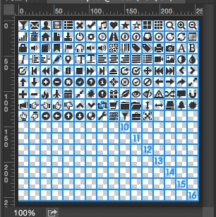
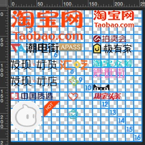

我们先来看一下，bootstrap对于图片精灵的解决方案。
/css 源码/
[class^=”icon-“],[class=” icon-“] {
display: inline-block;
width: 14px;
height: 14px;
margin-top: 1px; margin-right: .3em;
line-height: 14px;
vertical-align: text-top;
background-image: url(“../img/glyphicons-halflings.png”);
background-position: 14px 14px;
background-repeat: no-repeat
}
.icon-glass { background-position: 0 0; }
.icon-music { background-position: -24px 0; }
.icon-search { background-position: -48px 0; }
/html 源码/
<i class=”icon-glass”></i>
<i class=”icon-music”></i>
<i class=”icon-search”></i>
这套方案的问题
- 思考图片的命名杀死n多脑细胞。
- 命名较长，占用字节数，也就是CSS文件大小
- 也是最重要的，后期的维护。设想下，如果日后相册的图标不再被使用了，原来相册图标的位置可以被其他小图标（如RSS小图标）替换吗？理论上可以，实际上，我们除了必要的html替换，还需要重新修改图标样式的命名，即iAlbum→iRss的命名，而往往取而代之的做法是直接在后面添加新的图标
这种命名的好处是不用关心到底哪个位置是那个图标，不用担心命名冲突，在小图标位置以及内容更换的情况下也无需重命名。
–摘自：张鑫旭我是如何对网站CSS进行架构的
这个解决方案已经是几年前看技术男神张鑫旭的文章提到过，不过男神也只是一笔带过，几年也没有再更新类似的文章。所以也只能自己摸索了。
准备图片

先是将一个像素为256256px的photoshop白板分成了1616个像素为1414px的格子（中间蓝色分割线为两个像素）。图标来自bootstrap2的Glyphicons。之前有看过文章介绍图片是88像素渲染的，采用这种方式会对图片加载和压缩最友好。之所以没有让图标填充满1616px的格子，是因为图片精灵之间需要有至少1像素的间隙来解决浏览器兼容性问题。
源码
/css 代码/
i, .i{
display: inline-block;
background-repeat: no-repeat;
vertical-align: middle;
}
.i-1{
height: 14px;
width: 14px;
background-image: url(‘i-1.png’);
}
/第一行/
.i1-1{ background-position: 0 0; }
.i1-2{ background-position: -16px 0; }
.i1-3{ background-position: -32px 0; }
*
/第二行/
.i2-1{ background-position: 0 -16px; }
.i2-2{ background-position: -16px -16px; }
.i2-3{ background-position: -32px -16px; }
/html 代码/
<i class=”i-1 i1-1”></i>
<i class=”i-1 i1-2”></i>
<i class=”i-1 i1-3”></i>
定位命名方式：.i[行号]-[列号]。这个是根据图片网格来定位的。
指定图片的命名方式：.i-[图片文件名]。
<i> 标签定义与文本中其余部分不同的部分，并把这部分文本呈现为斜体文本。在没有其他元素可以使用时，比如 <b>, <cite>, <dfn>, <em>, <q>, <small>, <strong>，请使用 <i> 标签。–摘自：w3cSchool html5 i标签
而且i也是icon的首字母,所以我建议采用i标签来作为css图片精灵的标签。为了少写一个为i的的class名，直接将样式挂载到了i标签上。为了其他标签采用相同样式，所以也创建了一个同名class。因为图片的位置是固定的，所以这段类似于坐标的定位代码是可以被无数遵从这个解决方案的图片复用。
效果展示
这里都是相同大小的图片，对于大小并不统一的图片我们同样可以使用这个方案。以下为淘宝首页找到一张sprite图片为例。

淘宝的方式（采用css gaga可以自动生成相同的代码）
/ css 代码/
.tbindex-images { vertical-align: middle; display: -moz-inline-stack; }
.tbindex-images-market, .tbindex-images-shopping, .tbindex-images-sale, { background-image: url(tb/tb.png); }
.tbindex-images-market { background-position: 0 0; width: 146px; height: 58px }
.tbindex-images-shopping { background-position: 0 -58px; width: 94px; height: 20px }
.tbindex-images-sale { background-position: 0 -78px; width: 91px; height: 20px }
/ html 代码/
<s class=”tbindex-images tbindex-images-market”></s>
<s class=”tbindex-images tbindex-images-shopping”></s>
<s class=”tbindex-images tbindex-images-sale”></s>
采用坐标的方式一
/ css 代码/
/之前写好的坐标库/
.i-tb-27 { background-image: url(tb/tb-27.png); }
.i-tb-27.i12-1 { width: 60px; height: 60px; }
.i-tb-27.i1-1 { width: 142px; height: 58px; }
.i-tb-27.i12-5 { width: 35px; height: 34px; }
/ html 代码/
<i class=”i-tb-27 i12-1”></i>
<i class=”i-tb-27 i1-1”></i>
<i class=”i-tb-27 i12-5”></i>
坐标的方式二
/ css 代码/
/之前写好的坐标库/
.i-tb-1, .i-tb-2, .i-tb-3, { background-image: url(tb/tb-27.png); }
.i-tb-1 { width: 60px; height: 60px; }
.i-tb-2 { width: 142px; height: 58px; }
.i-tb-3 { width: 35px; height: 34px; }
/ html 代码/
<i class=”i-tb-1 i12-1”></i>
<i class=”i-tb-2 i1-1”></i>
<i class=”i-tb-3 i12-5”></i>
注：淘宝代码虽然看起来这么多，但肯定是有什么自动化工具生成的了。比如我知道的CSS Gaga可以做到。这里只是纯从命名方式来探讨图片精灵的问题。
采用极坐标的方式，书写的代码量是明显比较小的。因为完全省掉了图片定位的代码。而且如果图片大小是统一的话，也可以直接省去编写高宽代码。
两种坐标的方式的特点：
- 只需将图片路径设定到一个样式（i-tb-27）上即可，在页面上统一设定这些图标的样式的时候，也只需要统一给这个类设定即可。不过ie6并不支持群组选择器。
- 需要给每个类添加图片的路径，其他的样式也需要给这些类设定。也正因为样式之间相互独立，没有依赖关系。且没有兼容性问题。
这两种在不同的场景各有的自己的优势，所以这个也是让我始终不使用这种方式的原因。一套框架里面采用两种不同的方式解决一种问题，总是会增加学习的成本。
不知道是我学艺不精，还是没有领悟到男神的精髓，看到这里不经会发现，这种方式不仅需要设计师的配合，在应用上也给人感觉难以理解。希望能人能帮我解答啊。
我的其它方案
结合坐标的命名方式，采用css gaga自动生成的代码一
/ css 代码/
.ig1-1, .ig1-2, .ig1-3, { background-image: url(tb/tb-gaga.png); }
.ig1-1 { width: 142px; height: 58px; background-position: -62px -0px; }
.ig1-2 { width: 82px; height: 33px; background-position: -243px -0px; }
.ig1-3 { width: 139px; height: 20px; background-position: -327px -0px; }
/ html 代码/
<i class=”ig1-1”></i>
<i class=”ig1-2”></i>
<i class=”ig1-3”></i>
结合坐标的命名方式，采用css gaga自动生成的代码二
/ css 代码/
.ig-1 { background-image: url(tb/tb-gaga.png); }
.ig1-1 { width: 142px; height: 58px; background-position: -62px -0px; }
.ig1-2 { width: 82px; height: 33px; background-position: -243px -0px; }
.ig1-3 { width: 139px; height: 20px; background-position: -327px -0px; }
/ html 代码/
<i class=”ig-1 ig1-1”></i>
<i class=”ig-1 ig1-2”></i>
<i class=”ig-1 ig1-3”></i>
图片群组命名规则: .i-[群组名]
图片命名规则: .i[群组名]-[图片id]
这种方式的优点在于，一个类就是一个图标。彼此没有依赖，也解决了传统裹脚布类型命名方式。不过采用数字进行命名，也着实给人不友好的感觉（容易被同事吐槽）。想要知道哪个类对应哪个文件需要到文件夹里面进行查看。
图片高宽，和定位可以直接用css gaga 工具生成，也可以省掉这些琐碎的工作。不过这个工具有平台限制，目前好像只有windows版。